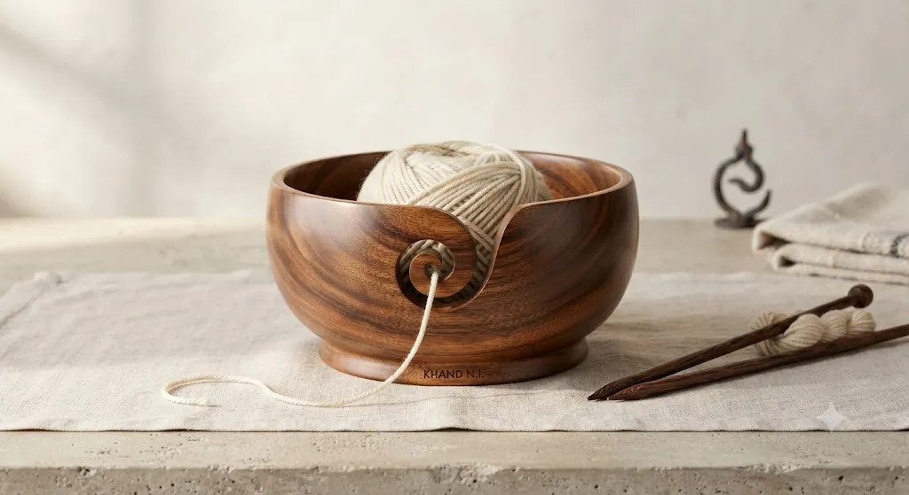
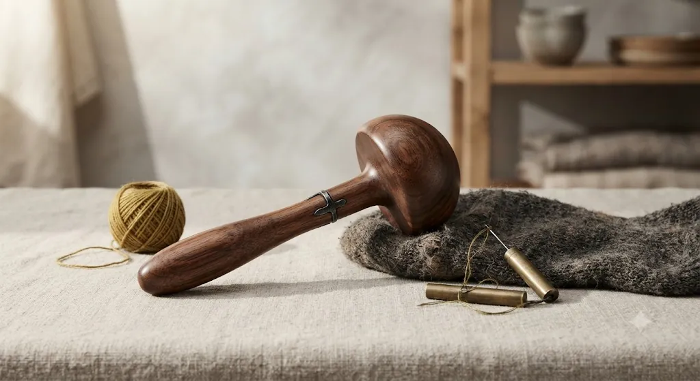
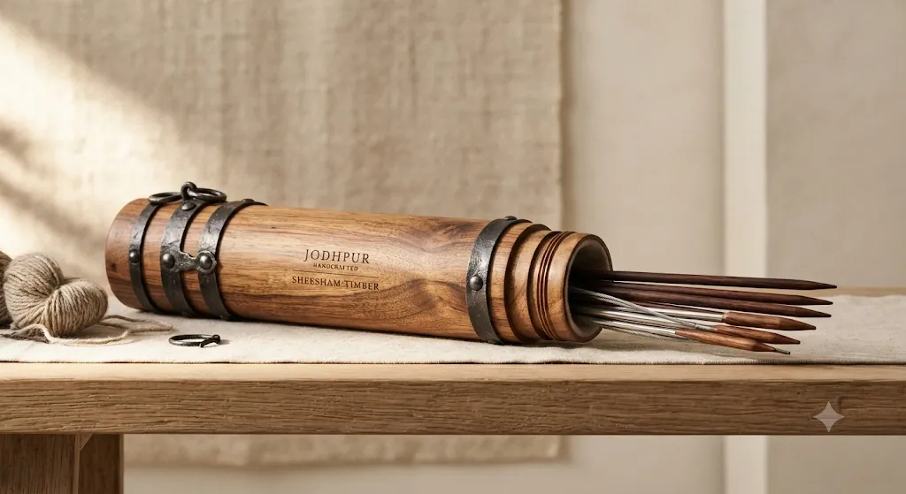
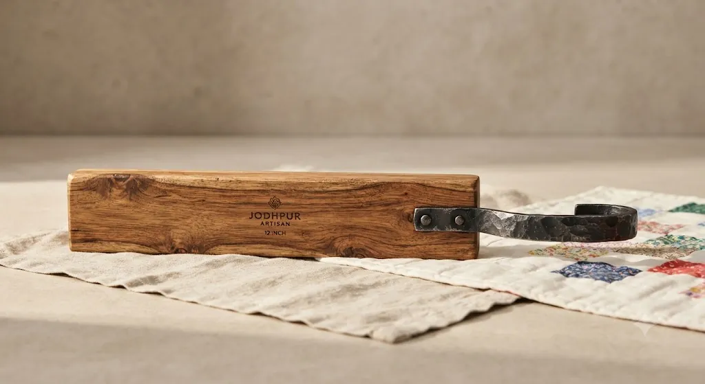
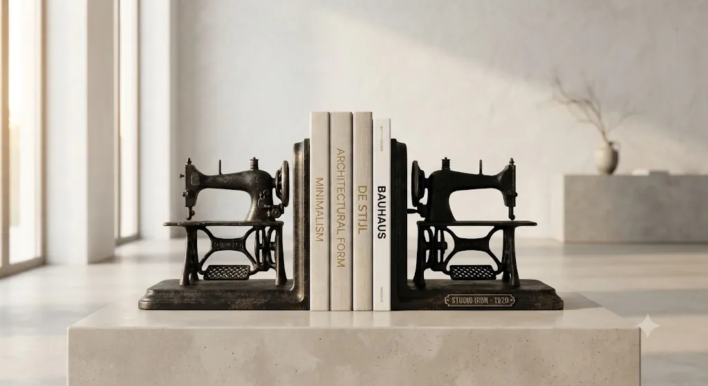
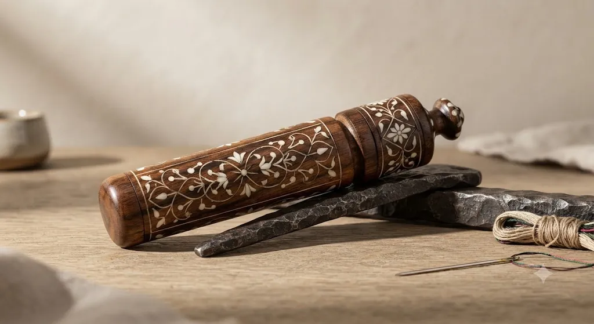
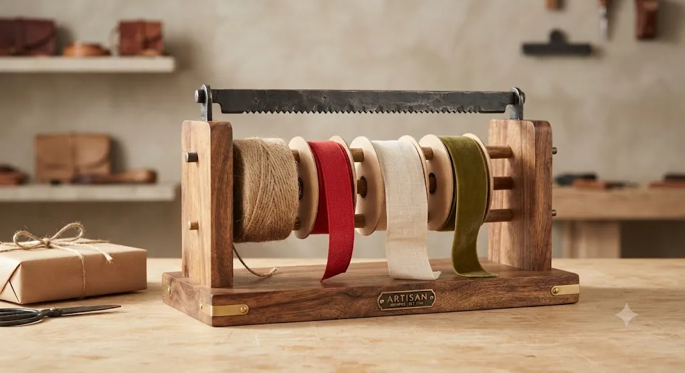

Sewing, Knitting & Haberdashery Woodcraft
10 export-ready SKUs handcrafted in Jodhpur from seasoned hardwood and hand-forged iron. Priced FOB Mundra, packed for container consolidation.

Turned Hardwood Yarn Bowl with Spiral CutoutAA-SW-261 · 0.004 CBM · MOQ 100 Pcs$5.20 – $6.80

Cantilevered 3-Tier Wooden Sewing BoxAA-SW-262 · 0.015 CBM · MOQ 50 Pcs$16.00 – $21.00

Wooden Embroidery Hoop Lap Stand with Adjustable ClampAA-SW-263 · 0.010 CBM · MOQ 100 Pcs$8.50 – $11.00

Standing Hardwood Thread Spool Rack (60 Spools)AA-SW-264 · 0.008 CBM · MOQ 100 Pcs$5.80 – $7.50

Hand-Turned Wooden Darning Egg / MushroomAA-SW-265 · 0.0003 CBM · MOQ 100 Pcs$1.80 – $2.40

Turned Hardwood Knitting Needle Storage CaseAA-SW-266 · 0.002 CBM · MOQ 100 Pcs$4.80 – $6.20

Quilter's Hardwood Clapper Tool (12")AA-SW-267 · 0.001 CBM · MOQ 100 Pcs$3.20 – $4.20

Vintage Cast-Iron Sewing Machine Silhouette BookendsAA-SW-268 · 0.004 CBM · MOQ 100 Pcs$7.80 – $10.20

Turned Wooden Needle Case with Bone InlayAA-SW-269 · 0.0001 CBM · MOQ 100 Pcs$1.20 – $1.60

Wooden Ribbon & Twine Dispenser with Iron CutterAA-SW-270 · 0.008 CBM · MOQ 100 Pcs$7.50 – $9.80